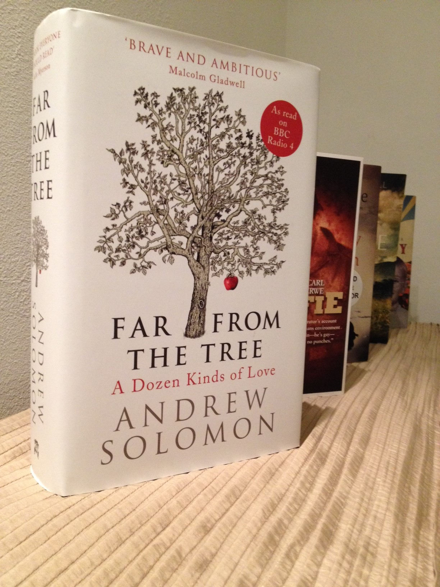

Andrew Solomon is the latest author to win the Green Carnation Prize with ‘Far From The Tree’ a book about exceptional children which celebrates what it means to be human in all its diversity.
This years judges were unanimous in their praise for the book, Chair of the judges for 2013, Uli Lenart of Gays the Word, described it as “A work of extraordinary humanity. Life affirming, insightful and profoundly moving. Andrew Solomon continuously makes you reassess what you think. An opus of diversity, resilience and acceptance; Far From The Tree is a book that has the power to make the World a better place.”
{kind=link}

Andrew Solomon joins previous winners.
Fellow judge Kerry Hudson, who was shortlisted for the prize in 2012, said “In the way that the best literature does, Far from The Tree gives access to different worlds and in doing so will change the way you look at things forever. It informs, inspires, moves and entertains. It is the sort of book that makes you grateful to have found it and that remains a gift for a lifetime.”
For more information contact greencarnationprize@gmail.com You can follow the prize on Twitter and Facebook in preparation for next year and get all the latest news.